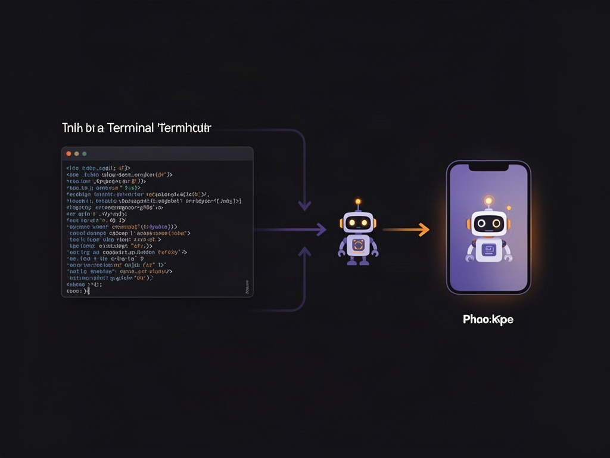
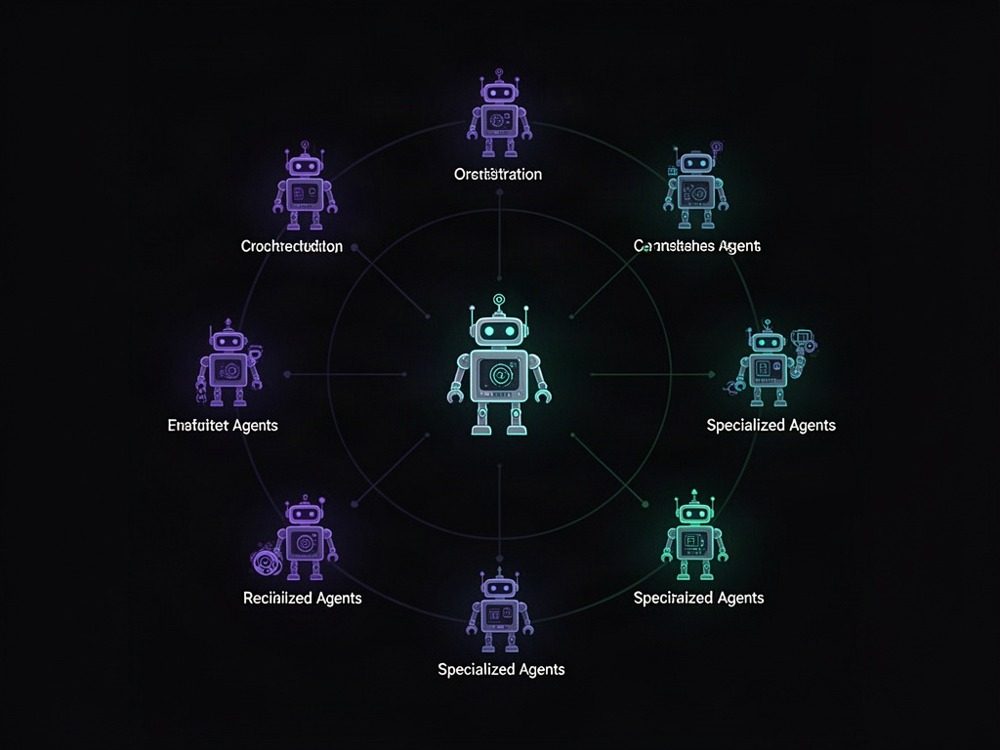
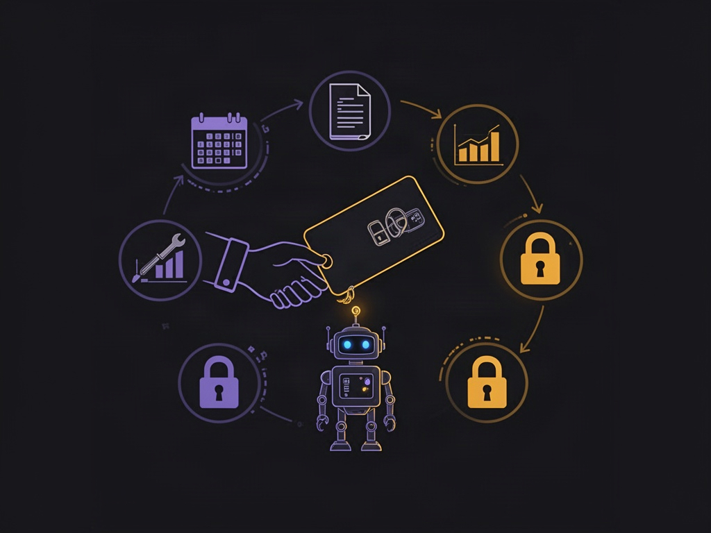

Existe uma categoria de agente de IA que quase nenhum dev discute, porque ela não foi feita pra dev nenhum. Enquanto Claude Code e Codex vivem no terminal — exigem um IDE, uma pasta de projeto, alguém que saiba escrever instrução técnica — uma nova safra de ferramentas está apostando no caminho oposto: agente que roda direto no app do celular, com um "computador" próprio na nuvem, pensado pra quem nunca abriu um terminal na vida.
Isso parece um detalhe de UX. Não é. É uma escolha de arquitetura com consequências reais em quem consegue montar uma operação de agentes sozinho — e em que tipo de trabalho esses agentes acabam fazendo.
O problema que "roda num app" resolve de verdade
A dificuldade número um de montar um agente autônomo de verdade nunca foi o modelo — é a infraestrutura em volta dele. Um agente que precisa executar tarefas ao longo do dia (pesquisar, responder, organizar, disparar ações em outras ferramentas) precisa de alguma máquina rodando, sempre ligada, sempre acessível. Pra maioria dos devs isso significa configurar uma VPS, manter um processo vivo, cuidar de deploy. Pra quem não é dev, essa barreira sozinha já mata o projeto antes de começar.
A resposta de ferramentas desse tipo é simples de descrever e difícil de construir: cada bot criado ganha o próprio ambiente de computação isolado na nuvem — sem VPS pra configurar, sem terminal pra abrir, sem processo pra manter vivo. Você cria o bot pelo celular ou pelo desktop, dá um nome e uma função pra ele, e ele já está rodando em algum lugar que não é o seu computador.

Duas filosofias de criação de agente
A diferença mais interessante não é técnica, é de modelo mental. Ferramentas de terminal como Claude Code partem do princípio de que você constrói o comportamento do agente — escreve regras, define skills, versiona instruções numa pasta local ou num repositório. É poderoso, mas exige saber o que está fazendo.
Ferramentas app-first invertem isso: você contrata uma função pronta. Em vez de escrever a skill do zero, você descreve o que quer ("preciso de alguém que cuide da parte de vendas", "preciso de alguém que analise dados de campanha") e o próprio produto já vem com blocos de comportamento prontos pra essa função — você ajusta, não constrói do zero. É a diferença entre programar um funcionário e contratar um.

Times de agente que conversam entre si
Onde isso fica genuinamente interessante é na composição. Um agente sozinho já ajuda, mas o ganho real aparece quando vários bots com funções diferentes — um que pesquisa, um que analisa dados, um que organiza agenda, um que orquestra os outros — formam um grupo e delegam tarefa entre si, sem você precisar mediar cada troca manualmente.
Isso espelha, em miniatura, o mesmo padrão de orquestrador-e-trabalhadores que já existe em frameworks mais técnicos de multi-agente — só que embalado numa interface de chat em grupo, algo que qualquer pessoa já sabe usar. Um bot orquestrador recebe a demanda, entende qual especialista do time resolve aquilo, e delega. O usuário só acompanha a conversa.

Onde a analogia de "funcionário" faz sentido
O ponto mais operacionalmente relevante desse modelo é como o acesso é concedido. Em vez de dar permissão de administrador pro bot, você concede acesso específico às ferramentas que aquela função precisa — exatamente como faria com uma pessoa nova entrando na empresa. Um bot de vendas ganha acesso ao CRM. Um bot de análise ganha acesso ao painel de métricas. Nada além disso.
Essa disciplina de permissão granular por função — não por padrão, mas porque a interface força você a pensar assim — é provavelmente o maior ganho de segurança prático desse tipo de ferramenta, mais do que qualquer coisa que aconteça no nível do modelo.
O que ainda falta pra isso ser confiável
Vale nomear a limitação honesta: um agente só é tão bom quanto o contexto que recebe. Sem acesso ao histórico real da operação — uma base de conhecimento, documentos, processos já documentados — o bot trabalha no escuro, respondendo de forma genérica em vez de operar como alguém que realmente conhece aquele negócio. A conexão com ferramentas (calendário, CRM, ferramentas de conteúdo) resolve a parte de execução; a parte de julgamento continua dependendo de quanto contexto histórico foi entregue a ele.
Isso não é peculiaridade de nenhuma ferramenta específica — é a mesma lição que qualquer sistema de agente de produção já aprendeu: contexto bom vale mais que modelo melhor.
O framework de decisão
| Perfil | Caminho mais natural |
|---|---|
| Você programa e quer controle fino sobre comportamento | Agente de terminal (Claude Code, Codex) — você escreve a skill |
| Você não programa e precisa de operação rodando hoje | Agente app-first com função pré-construída |
| Você quer times de agente colaborando | Qualquer um dos dois — o padrão orquestrador+especialistas existe nos dois mundos, muda só a interface |
| Você precisa que o agente "saiba" seu negócio de verdade | Nenhuma ferramenta resolve sem contexto histórico real conectado — isso é trabalho seu, não do produto |
A camada operacional das empresas — tarefas repetitivas, pesquisa, triagem, atualização de status — está deixando de ser exclusividade de quem sabe programar. Isso não substitui pessoas na direção estratégica do negócio, mas muda completamente o cálculo de quantas mãos você precisa contratar pra rodar o dia a dia. A barreira de entrada pra montar um pequeno time de agentes caiu de "saber programar" pra "saber descrever uma função" — e essa é a mudança que vale prestar atenção.